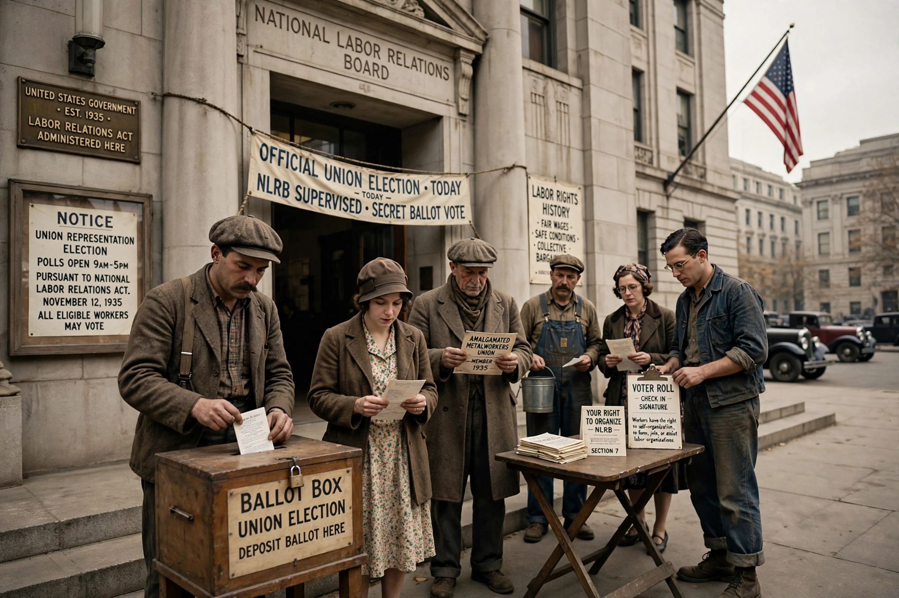

Formed: 5 July 1935
Headquarters: Washington, D.C.
Type: Independent federal agency
Governing law: National Labor Relations Act (1935)
The National Labor Relations Board (NLRB) is an independent agency of the United States federal government vested with the power to safeguard employees' rights to organize, conduct union representation elections, and prevent and remedy unfair labor practices by private-sector employers and unions.
The Board consists of five members appointed by the President with Senate consent to five-year terms, plus a General Counsel who acts as prosecutor. Regional offices across the country investigate charges and run elections.
The NLRB was created by the National Labor Relations Act of 1935 (the Wagner Act), a centerpiece of the New Deal. Its constitutionality was upheld in NLRB v. Jones & Laughlin Steel Corp. (1937). The Taft–Hartley Act of 1947 added union unfair labor practices and reshaped Board procedure.
The agency certifies bargaining representatives through secret-ballot elections, adjudicates unfair labor practice charges such as retaliatory firings, and seeks injunctions in federal court in serious cases.